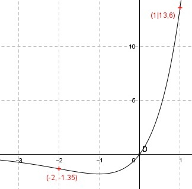
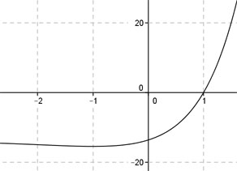

Aufgabe 125 Ergänzen Sie die Wertetabelle für den Graphen: y = 5 * x * ex x -2 1 y -1,35 13,6 10 y = f(-2) = 5 * (-2) * e-(-2) = - ---- = -1,35 e2  An welchen Stellen x die Funktion den Wert 13,6 annimmt, ist elementar nicht zu ermitteln. Abgelesen: Es ist eine Stelle. Zur Berechnung wendet man ein Näherungs- verfahren an, hier die Regula falsi. x0 = gesuchte Nullstelle x1 * |y(x2)| + x2 * |y(x1)| x0 = ------------------------------ |y(x1)| + |y(x2)| fx = 13,6 eingesetzt : 13,6 = 5 * x * ex |-13,6 5 * x * ex - 13,6 = 0 Als Funktion: y = 5 * x * ex - 13,6 Die Nullstellen dieser Funktion (y = 0) entsprechen den gesuchten Werten für x.  Abgelesen: Nullstelle zwischen 0,8 und 1,2. (Durch Probieren ermittelt: 5 * 1 * e1 = 13,6, d. h. Nullstelle bei x = 1) Nullstelle x0 zwischen 0,8 und 1,2 mit Excel ermittelt: A B C D E F G H I J 0,8 1,2 6,3182 4,6986 5,0546 5,6383 10,6929 11,0168 0,9706 -0,7917 0,9706 1,2 6,3182 0,7917 6,1324 0,9501 7,0825 7,1100 0,9961 -0,1145 0,9961 1,2 6,3182 0,1145 6,2939 0,1374 6,4313 6,4328 0,9998 -0,0162 0,9998 1,2 6,3182 0,0162 6,3168 0,0194 6,3362 6,3344 1,0003 -0,0023 Die gesuchte Nullstelle ergibt sich nach mehreren Näherungen mit ausreichender Genauigkeit zu x0 = 1 gerundet. Weitere Erläuterungen zur Tabelle siehe Aufgabe 101.